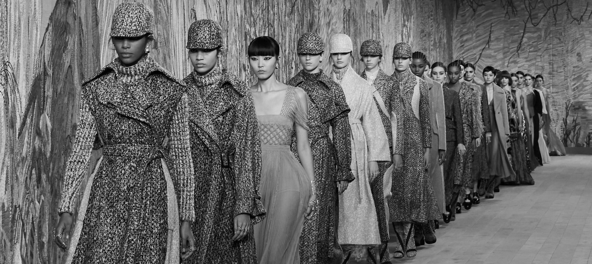

Dior hosts its first post-COVID-19 shows in Paris, showcasing fall-winter haute couture collection
The Associated Press | July 06, 2021
Dior ventured back into the real world on 5 July after more than a year away, with an in-person show for its fall-winter 2021-22 Haute Couture collection in Paris.
The shows took place at Dior’s favourite venue, a temporary structure in the garden of the Musée Rodin. Street photographers jostled one another outside the front gate, while invited photographers massed at the photo call within. Guests greeted one another with air kisses. Several foreign accents were proof of a return to overseas travel. There were stars: Jessica Chastain, Monica Bellucci, Cara Delevingne.
But there were differences. Guests wore masks and had their temperatures taken at the door. Seats on the benches were spaced farther apart than usual, though that was quickly ignored, especially in the front row
Dior’s creative director, Maria Grazia Chiuri, works frequently with female artists, and for this collection she commissioned French artist Eva Jospin to design life-sized, silk-thread embroideries to cover all 350 square meters (yards) of the venue’s walls. A nod to the Sala dei Ricami in Rome’s Colonna Palace, they represented several months of handiwork by women at the Chanakya School of Craft in Mumbai.
The walls were a reflection of the collection. This was tactile, textured clothing that demanded proximity and presence. The show opened with a range of black-and-white checks and tweeds with matching boots – some looks embroidered with feathers for a tweed effect.
Modernised versions of the house’s iconic Bar jacket were paired with pleated wraparound skirts and tailored trousers. Outerwear was a major theme, such as a cashmere coat with patchwork embroidery. For evening, models wore ethereal long silk plissé dresses in soft shades of mustard, plaster, or Dior gray.
After more than a year of virtual shows streamed online, the question has arisen as to whether live fashion shows are even necessary. On 5 July, Dior used craftmanship and materiality to make an eloquent argument in their favour.
Follow Us


Log In
Username
Password